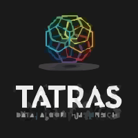

I am a Master of Computing student at the National University of Singapore (NUS) with over a decade of experience in building data-driven and AI-powered products in multinationals and promising startups. My background spans Amazon, GE Global Research, TATA R&D, HealthTech, EdTech, FinTech, and InsureTech, where I’ve led the end-to-end development of scalable, full-stack analytics and software systems in industrial health monitoring, product recommendation, customer service capacity planning, cross-border ecommerce, insurance aggregation, and government engagement. Currently, I am deepening and broadening my knowledge in AI, big data systems, and web3 technologies, with a strong interest in applying AI to real-world business problems. I strive to transform knowledge into impactful and meaningful products that address real-world problems and add lasting value to society.
Outside of my professional pursuits, I stay active and engaged through a diverse set of interests. I enjoy playing Cricket, swimming, and working out at the gym, activities that help me maintain discipline and fitness and keep me in shape. I am an avid reader with a strong interest in science fiction, tech, and finance. I am especially drawn to the ideas that explore the future, technology, and ethics. I also have a keen interest in quantitative finance and value investing. Additionally, I enjoy traveling and meeting people from different cultures, learning about their cuisines, traditions, and perspectives. These experiences continually broaden and enrich my outlook on life. I believe in working, connecting, and learning with curiosity and positivity.
